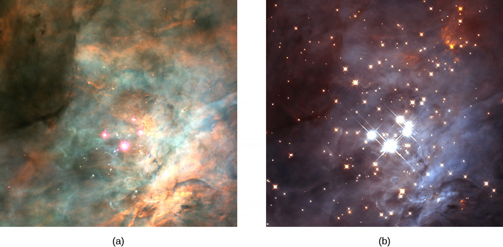
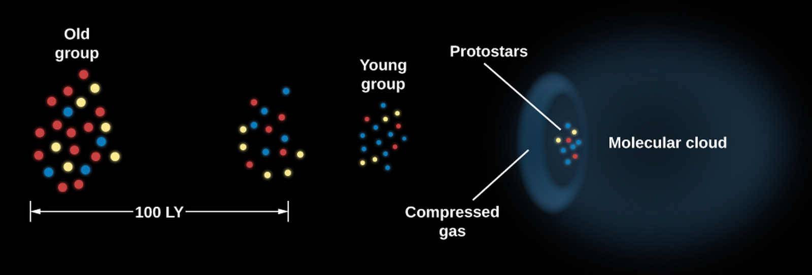
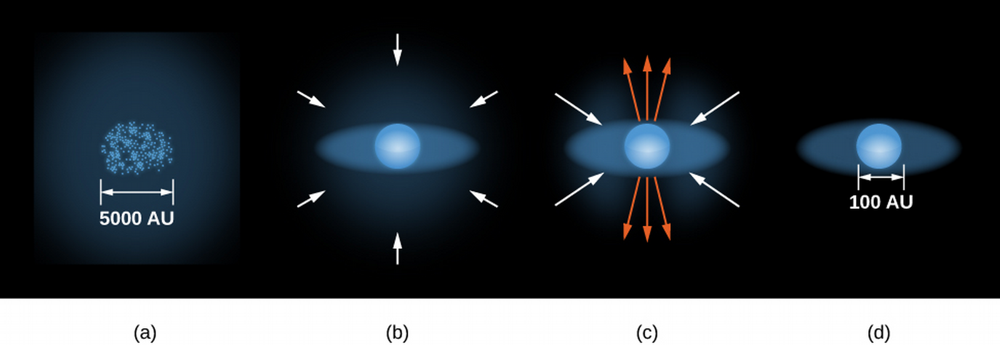
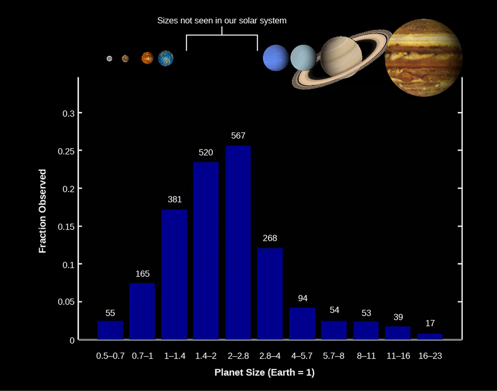
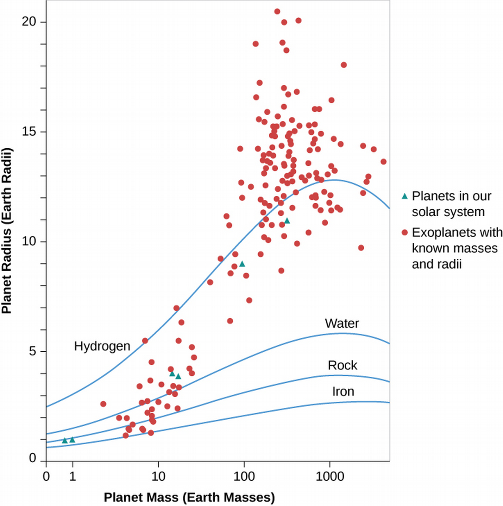

ASTR101 Ch 17-18
Ch 19 - Celestial Distances
Fundamental Units of Distance
- Distances initially had to do with the human body:
- The inch is the approximate distance between knuckles
- The yard is the span from the extended finger to the nose of the British king (??)
- Foot is the British king's foot
- Different countries had different measures.
- Around 1750, a uniform set of standards was made
The Metric System
- The metric system is the SI units we've been studying, and has the meter as the unit of length.
- This includes prefixes like centi-, mili-, kilo-, etc.
Modern Redefinitions of the Meter
- In 1889, the meter was defined by a bar of platinum-iridium metal in Paris, of which precise replicas were made.
- As science gets more and more precise, so do the definitions of these distances.
- In 1960, a meter is defined as the distance of 1,650,763.73 wavelengths of a specific atomic transition of krypton-86.
- In 1983, a meter is defined in terms of the speed of light, as the distance light travels in 1/299,792,458.6 seconds, which is even more stable.
- Therefore, a light-second is defined as the distance that light travels in one second, 299,792,458.6 meters.
Distances within the Solar System
- Early astronomers like Copernicus and Kepler measured the relative distances (ratios of distances) of planets, not the absolute (or actual) distances.
- Some distances can be directly calculated from radar measurements, using the known speed of light.
- The basic unit of distance for objects within the solar system is the astronomical unit (AU), the (average) distance between the Earth and the Sun; 1 AU = 1.5×1011 m=500 light-seconds.
Surveying the Stars
Triangulation in Space
- You can deduce how far a pen is from you because you have two eyes [activity].
- We can use parallax to deduce the distance of an object based on how far you have to turn your head to see it from two points along the baseline, A and B.

Distances to Stars
- In the scale of outer space, we have a baseline of 2 AU from the Earth's rotation.
- Which is nothing, when talking of cosmic scales. We don't detect see a parallax effect from Earth's nearest star.
- Unless we try really hard, which astronomers Friedrich Bessel, Friedrich Struve, and Thomas Henderson of Germany, Russia, and Scotland did in 1838, independently, of 61 Cygni, Alpha Centauri, and Vega.
- The closest star, Alpha Centauri, showed parallax of 1.5 arcsec—about the angular resolution of a quarter seen from 3 miles away!
Units of Stellar Distance
- An object needs to be 206,265 AU away to have a parallax of 1 arcsec.
- A parsec (pc) is defined as this distance; 1 pc=206,625 AU. It's how far away something has to be from Earth to have a parallax of 1 arcsecond.
- The distance away D of a star, in parsecs, is the reciprocal of its parallax p in arcseconds:
\[D=\frac{1}{p}.\]
The Nearest Stars
- Recall closest star is Alpha Centauri (actually a binary star!).
- A third, faint star, Proxima Centauri, is .1 Ly closer.
Measuring Parallaxes in Space
- Stellar parallax measurement revolutionized by Hipparcos spacecraft in 1989, which measured stars out to 300 Ly with accuracy of 10-20%.
- Its successor Gaia was launched in 2013 by the European Space Agency, it should measure the position and distances of almost 1 billion stars with an accuracy of ten-millionths of an arcsecond, out to 30,000 Ly (almost a third of the galactic disk).
Variable Stars: One Key to Cosmic Distances
- Most stars have constant luminosity, like the Sun, but some are variable stars whose luminosity typically changes on a regular cycle.
- Observe the light curve for an example star. What is the minimum, maximum, and period of the star?

Pulsating Variables
- Two types of variable stars yield accurate distances. They're both pulsating variable stars, which means they actually expand and contract in time, like your chest does when you breathe.
- We can measure their periods with the doppler shift of the expanding/contracting surface, or with the change in overall color (due to temperature change), or with the changing luminosity, which is most important.
- The two types are cepheids and RR Lyrae.
Cepheid Variables
- Large, yellow, pulsating stars.
- Several hundred are known, with periods of 3-50 days.
- Luminosities are 103 to 104 times brighter than the Sun, and vary between .01 and 10 times the average luminosity.
The Period-Luminosity Relation
- The periods of cepheids can be directly measured, as mentioned above.
- Turns out the period is related to the absolute luminosity; this is known as the period-luminosity relation, discovered in 1908 by Henrietta Leavitt of Harvard. This is huge, because we can figure out how far away the cepheid is by comparing the apparent magnitude (flux) that we observe to the absolute luminosity!
RR Lyrae Stars
- More common but less luminous than the cepheids.
- Periods always less than one day.
- Brightness changes typically less than a factor of about 2.
- By noticing that RR Lyrae in clusters has the same apparent brightness, it was discovered that they all have the same intrinsic luminosity, 50 Lo.

The H-R Diagram and Cosmic Distances
Distances from Spectral Types
- If we need to measure distance to a star that isn't varying, we can take advantage of the H-R diagram.
- From the spectrum, we can determine the spectral class. We can then analyze the spectrum to deduce the pressure, from which we draw the density of the star.

- Luminosity classes are divided into:
- Ia: Brightest supergiants
- Ib: Less luminous supergiants
- II: Bright giants
- III: Giants
- IV: Subgiants (smaller than giants, bigger than main-sequence)
- V: Main-sequence stars
- Need both luminosity and spectral type to fully characterize star on H-R diagram; eg., F3 V, or M2 III.
- If we have both spectral class and luminosity class, we can find the luminosity from the H-R diagram. This method is (inaccurately) referred to as spectroscopic parallax.

Measurement Methods for Varying Distances
| Range (Ly) | Method |
|---|---|
| 4-30,000* | Trigonometric parallax |
| up to 300,000 | RR Lyrae |
| up to 1,200,000 | H-R diagram and spectroscopic distances |
| up to 60,000,000 | Cepheids |
* requires Gaia
Ch 21 - The Birth of Stars and the Discovery of Planets Outside the Solar System
Star Formation
- We've discussed stars as nuclear furnaces that activate if they reach 10-12 million K with the pp-chain, but how do they come to this point?
- It's estimated that on average, three stars are formed per year in our Galaxy.
Quick Review
- Stars are defined by their ability to sustain nuclear fusion.
- Stable (main-sequence) stars like the Sun maintain equilibrium through nuclear fusion in their stars.
- Each second, 600 million tons of hydrogen fuse to helium in the Sun, releasing 4 million tons of matter as energy. This means all stars will eventually run out of fuel.
- Stars range from about 1/12 Mo to 200 MSun, with smaller stars being more prevalent.
- Along the main sequence, the higher the mass, the higher the luminosity.
- A galaxy of stars like the Milky Way contains enough gas and dust to make billions of Sun-like stars.
Molecular Clouds: Stellar Nurseries
- To study star birth, we have to look for dense, cold clouds.
- Giant molecular clouds are massive reservoirs of interstellar matter, with temperatures 10-20 K and most atoms bound in molecules. Most stars are born of giant molecular clouds.
- Clouds contain cold, dense regions called clumps. Clumps in turn somtimes contain denser, smaller regions, called cores, which are star embryos!
- Remember that a star's life revolves around two forces, gravity and pressure—gravity condenses everything inward, and pressure resists by pushing out.
- The higher the temperature, the higher the pressure. So low-temperature clouds and cores are ideal for gravity to take over, which is good, because…
- To sustain fusion, we need to increase the density of interstellar atoms by 1020.
The Orion Molecular Cloud
- Orion constellation contains molecular cloud, seen through infrared and radio emissions.
- It is a present source of active star formation.

- Orion's belt ~5 million years old, middle of sword contains Orion Nebula, 300,000 to 1 million years old, where stars still form today.
- The nebula contains a bright cluster of stars called the Trapezium.

Figure 8: (a) visible and (b) IR images of Orion Nebula show the Trapezium.
- Only about 1% of the dust in has converted to stars, the rest will probably be heated and blown away by stellar winds and explosions.
- This is why older star clusters are easier to seen the visible range; the dust has been pushed away.
Triggered Star Formation
- Once star clusters mature, they can help create more clusters, which is how the stars of Orion are theorized to have come about. This process is referred to as triggered star formation.
- A massive star emits UV and high-speed gas (stellar wind) when formed.
- This heats up the gas around it and causes it to expand.
- Dying stars explode, further heating the gas.
- Hot gases pile into the surrounding cold cloud, increasing its density.
- If density is sufficiently increased, gravity takes over, stars begin to form.
- This process can't take place if only low-mass stars are produced in the cloud, as are in many clouds.

Figure 9: Triggered star formation
The Birth of a Star
- The step between dust compressing and the youngest star is difficult to observe, because (1) it's very short (thousands of years, making it sparse), and (2) it's literally as dusty as you can get without being a star, so that it absorbs a lot of visible light.
- Still, a combination of limited observations and theoretical calculations yield the following.
- A dense, cold core is formed.
- The gravitational force of infalling gas overwhelms the (relatively low) internal pressure.
- A rapid collapse ensues, increasing many-fold the core density. Between this core contraction and the beginning of pp-fusion, the object is called a protostar.
- By conservation of angular momentum, the protostar spins faster and faster as it contracts, so that objects along the poles (which don't move much) collapse inward, but objects along the equator don't quite collapse.
- The protostar, having reached its final mass, becomes a T Tauri star.
- Only stars with mass ≤MSun become T Tauri stars.

Figure 10: Orange lines are stellar wind.
Winds and Jets
- T Tauri may be a middle stage between protostar and hydrogen-fusing stars like the Sun, according to recent observations.
- T Tauri release stellar winds, mainly protons and electrons streaming at several hundred thousand mph.
- Sometimes light is emitted from a denser lump of gas that the stellar wind stream collides with, exciting its atoms and emitting light. This light-emitting gas portion is known as a Herbig-Haro (HH) object after its discoverers.
- The stellar wind pushes out the surrounding dust and gas until the disk and protostar are visible.
- The dust enveloping the birthing star is so dense that the streams are visible, but no the star itself!

The H-R Diagram and the Study of Stellar Evolution
Evolutionary Tracks
- We can graphically describe the evolution of a star by tracing its characteristics in an H-R diagram!
- Let's start with a protostar, which is initially cool with a very large radius and low density. Heat can radiate out of the star easily at this low-density stage, meaning gravity is much stronger than internal pressure.
- Thus the star very quickly shrinks, decreasing its surface area and therefore luminosity (downward on H-R diagram).
- It keeps shrinking until internal temperature is strong enough to counter gravitational contraction, increasing its temperature in the process (leftward on H-R diagram).
- Note the timescales, and that more massive stars go through all stages of evolution faster.

Figure 12: Numbers are years of age, stars above dashed line are still enveloped by infalling material.
- When the star's inner temperature is high enough to fuse hydrogen to helium, we say the star has reached the main sequence.
- Stars on the main sequence are much more stable, changing very slowly with the depletion of hydrogen, the star's life fuel.
- Where the star falls on the main sequence depends on its mass; the higher the mass, the higher the temperature and luminosity.
- If the mass is too low (less than the critical mass of 0.075 Mo), temperatures for nuclear reaction are never achieved; these become brown dwarfs or planets.
- On the other hand, if the mass is too high (100-200 Mo), the internal pressure halts the accretion of additional matter.
Exoplanets Everywhere: What We Are Learning
Kepler Results

Figure 13: Kepler Discoveries

Figure 14: Actual Abundances
Planets with known density
- We can compare planet radius and density to get additional information about percentage of materials in the planet.
- Note as mass increases, radius increases, until there is so much mass that it causes gravitational contraction.

Figure 15: Blue are if planets had pure compositions
Exoplanetary Systems
- Other planetary systems than the solar system (exoplanetary systems) do happen, and likely also with multiple planets. Over 3000 such systems have been observed. One such exoplanetary system is Kepler-62.

Figure 16: Artist's conception. Habitable zones have calculated temperatures 0-100°C which supports liquid water.